해양열파 장기전망 및 적응방향
제1절 기후위기와 해양열파
기후변화는 전지구적 해양 시스템에 광범위한 영향을 미치고 있으며, 그 중에서도 해양 열파(Marine Heatwaves, MHWs)는 해양생태계와 인간 활동에 직접적이고 즉각적인 위협이 되고 있다. IPCC 제6차 평가보고서는 인위적 기후변화로 인해 해양 열파의 빈도가 1980년대 이후 두 배 증가했으며, 강도와 지속 기간 역시 증가하고 있다고 보고하였다(IPCC, 2021).
해양 열파는 해수 표면 온도가 특정 지역의 계절별 평년값을 초과하여 5일 이상 지속되는 현상으로 정의된다(Hobday et al., 2016). 이는 단순한 수온 상승을 넘어 해양생태계 구조를 근본적으로 변화시키고, 수산자원의 대량 폐사, 유해 조류 대발생, 산호 백화 현상 등 연쇄적인 생태계 교란을 유발한다(Oliver et al., 2021).
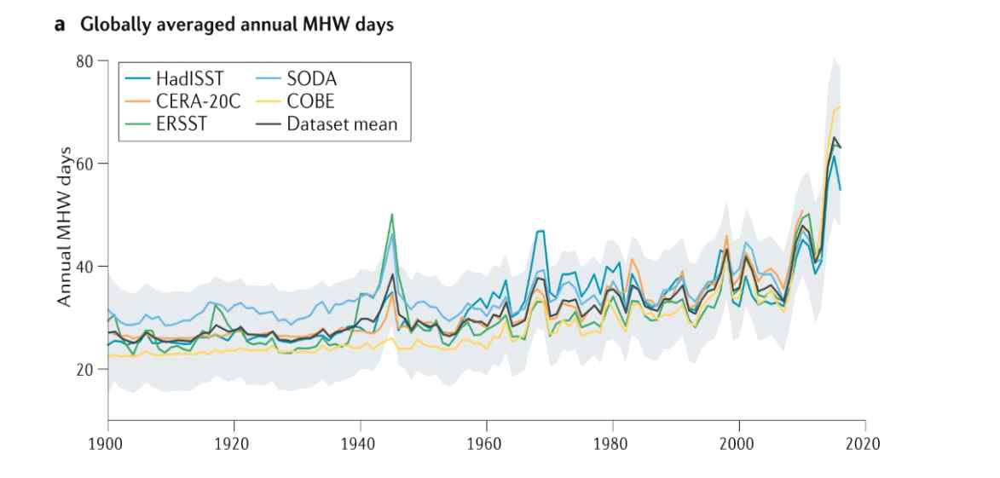
Oliver et al.(2018)은 위성 관측 자료와 현장 관측 자료를 활용하여 지난 100년 이상의 기간 동안 전지구 해양 열파의 장기 변화 추세를 분석하였다. 1925~2016년 기간 동안 전지구 평균 해양 열파 빈도는 34% 증가했으며, 평균 지속기간은 17% 증가하여 연간 해양 열파 일수는 54% 증가한 것으로 나타났다. 이러한 변화의 대부분은 최근 수십 년 동안 발생하여 온난화 추세가 가속화되었음을 시사한다.
공간적으로는 해양 열파 빈도가 전지구 해양의 82% 이상에서 증가하였으며, 특히 북대서양 고위도 지역(북위 50도 이상)에서 가장 큰 증가(연간 2~6회)를 보였다. 지속기간은 전지구 해양의 84%에서 증가하였고, 전지구 평균으로는 1982년 이후 10년당 1.3일씩 유의하게 증가하였다. 전지구 해양의 80% 이상에서 평균 해수면 온도 상승 추세만으로 빈도 변화를 설명할 수 있어, 지속적인 지구온난화가 해양 열파 증가의 주요 원인임을 시사한다.
2011년 서호주 연안 해양 열파는 10주 이상 지속되며 수온을 평년보다 5℃ 상승시켰고, 전복·가재 등 수산자원의 대량 폐사로 약 3억 달러의 경제적 손실을 초래하였다(Wernberg et al., 2016). 2013~2016년 북동태평양의 “The Blob”은 알래스카만에서 캘리포니아에 이르는 광범위한 해역에 영향을 미쳐 해양 먹이망 붕괴와 해조류 숲 감소를 일으켰다(Di Lorenzo and Mantua, 2016).
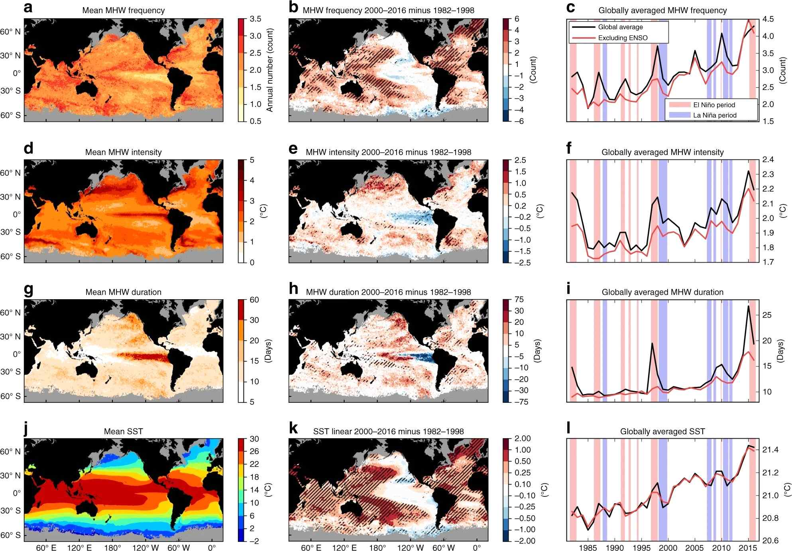
한반도 주변 해역 역시 해양 열파의 영향권에서 벗어나지 못하고 있다. 국립수산과학원의 장기 관측 자료에 따르면, 1982년부터 2018년 사이 우리나라 주변 해역에서는 여름철에 평균 4.4일의 해양 열파가 발생하였으며, 매 10년마다 2~3일 정도 증가하는 추세를 보인다. 2023년 여름철 한반도 주변 해역의 평균 수온은 26.0℃로, 지난 26년간(1997~2022년) 평균수온 24.4℃ 대비 1.6℃가 높았으며, 특히 동해는 평년보다 2℃ 이상 상승하여 관측 이래 가장 높은 기록을 경신하였다.
국립수산과학원의 '2024 수산 분야 기후변화 영향' 보고서에 따르면, 최근 56년간(1968~2024년) 우리나라 연근해 평균 수온은 1.44℃ 상승하여 전지구 평균(약 0.56℃/100년)의 약 2배에 이르며, 해역별로는 동해가 1.9℃로 가장 큰 상승폭을 보였고 서해 1.27℃, 남해 1.15℃ 순이었다. 또한 1995~2025년 동아시아해역의 10월 해면수온은 10년에 0.3~0.5℃씩 증가하는 추세로, 동해의 상승률이 가장 높았다.
제2절 해양 열파의 발생 메커니즘과 특성
1. 해양 열파의 발생 원인
해양 열파는 복합적인 대기-해양 상호작용을 통해 발생한다. 첫째, 대기 차단 현상(atmospheric blocking)에 의한 고기압 정체가 맑은 날씨를 유지시켜 태양 복사 에너지 유입을 증가시키고, 바람을 약화시켜 해수의 수직 혼합을 감소시킨다(Rodrigues et al., 2019). 둘째, 해류 변동성이 중요한 역할을 하는데, 쿠로시오 해류와 같은 난류의 강화나 경로 변화는 따뜻한 해수를 평소보다 북쪽으로 수송하여 국지적 해양 열파를 유발할 수 있다(Miyama et al., 2021). 셋째, 엘니뇨-남방진동(ENSO), 인도양 다이폴 모드(IOD), 태평양 십년 진동(PDO) 등 기후 변동 모드와의 상호작용이 해양 열파의 강도와 지속성에 영향을 미친다(Holbrook et al., 2019).
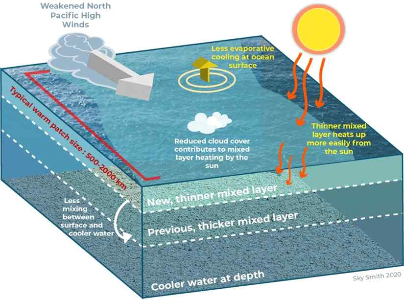
2. 해양 열파의 분류와 특성
Hobday et al.(2018)은 해양 열파의 심각도를 강도에 따라 4단계로 분류하는 체계를 제안하였다. 이는 기상학에서 허리케인을 카테고리 1~5로 구분하는 것과 유사한 개념으로, 기후평균값과 90백분위수 값의 차이(ΔT)를 기준으로 한다.
| 구분 | 기준 | 예시(평년 20℃ 기준) | 생태계 영향 |
|---|---|---|---|
| Category I (보통) | 90백분위수 초과, 2×ΔT 미만 | 22~24℃ | 일시적 스트레스, 대체로 회복 가능 |
| Category II (강함) | 2×ΔT 이상 3×ΔT 미만 | 24~26℃ | 산호 백화 시작, 해조류 성장 저하 |
| Category III (심각) | 3×ΔT 이상 4×ΔT 미만 | 26~28℃ | 대규모 백화, 해조림 소멸, 어류 폐사 |
| Category IV (극한) | 4×ΔT 이상 | 28℃ 이상 | 생태계 구조의 근본적 변화 |
Smale et al.(2019)에 따르면 해양 열파의 강도가 높을수록 생태계 영향이 심각하며 회복 기간도 길어진다. Category I~II 수준은 대체로 가역적(reversible) 영향을 미쳐 수주~수개월 내 정상 상태로 회복될 수 있는 반면, Category III 이상은 비가역적(irreversible) 생태계 변화를 초래할 수 있다. 2011년 서호주 Category IV 해양 열파는 대규모 해조림을 소멸시켰고 10년 이상 지난 현재까지도 완전히 회복되지 않았으며, 2016년 그레이트 배리어 리프의 극심한 해양 열파는 북부 지역 산호의 약 30%를 폐사시켰다.
특히 Category III 이상의 강력한 해양 열파는 생태계의 ‘레짐 전환(regime shift)’을 유발할 수 있다. 호주 남서부 해역에서는 2011년 해양 열파 이후 켈프(kelp) 우점 생태계가 해조류가 거의 없는 암반 생태계로 전환되었으며, 이는 어류 군집 구성과 생물다양성에 장기적인 변화를 가져왔다.
제3절 한반도 해역의 해양 열파 현황과 전망
1. 한반도 주변 해역 해양 열파 발생 현황
한반도 주변 해역은 동해, 황해, 남해로 구분되며 해역별로 발생 특성이 다르게 나타난다. KIOST 해양기후예측센터가 위성 기반 재분석 자료(OISST)를 활용하여 1982년부터 2018년까지 37년간 분석한 결과, 한국해 해양 열파는 동해, 황해, 동중국해 순서로 평균 지속시간이 길게 나타났다(장찬주 외, 2023).
동해는 평균 지속시간이 약 13.5일로 가장 길고 평균 강도도 2.3℃로 가장 강하다. 특히 동한만과 극전선 주변에서는 평균 17일 이상의 장기 해양 열파가 발생하며, 이는 동한난류와 북한한류가 수렴하는 극전선의 해류 변동 영향으로 분석된다. 황해는 평균 지속시간 약 11일, 평균 강도 1.9℃로, 수심이 얕고 대륙의 영향을 크게 받아 계절적 변동성이 크며 저층 빈산소 수괴 형성과 결합해 해양생물 대량 폐사를 유발하는 특징이 있다. 남해는 평균 지속시간 약 9.5일, 평균 강도 1.6℃로 가장 낮지만 쿠로시오 해류와 연안수의 상호작용으로 복잡한 패턴을 보이며, 제주 해역은 아열대화와 맞물려 영향이 증폭되고 있다.
1968~2024년(57년간) 우리나라 연근해 표층 수온은 평균 1.58℃ 상승했으며 동해가 약 2.04℃로 가장 두드러졌고 서해 1.44℃, 남해 1.27℃ 순이었다. 2023년 봄철 동해 평균 수온은 10.0℃로 관측 이래 처음 두 자릿수에 도달했으며, 1980~2010년대 30년간 0.6℃ 상승한 데 비해 2021~2023년 최근 3년간 1℃가 상승할 만큼 속도가 급격히 빨라지고 있다. 여름철 해양 열파는 해역에 상관없이 운량 감소(고기압)에 따른 단파복사 증가, 바람 약화에 따른 혼합 약화, 남풍 증가에 따른 온난 공기 유입이 복합적으로 작용해 발생하는 반면, 겨울철에는 황·동중국해는 여름과 유사한 기작을, 동해는 극전선에서의 동한난류 북상에 따른 난류 유입이 주요 원인으로 분석되었다(장찬주 외, 2023).
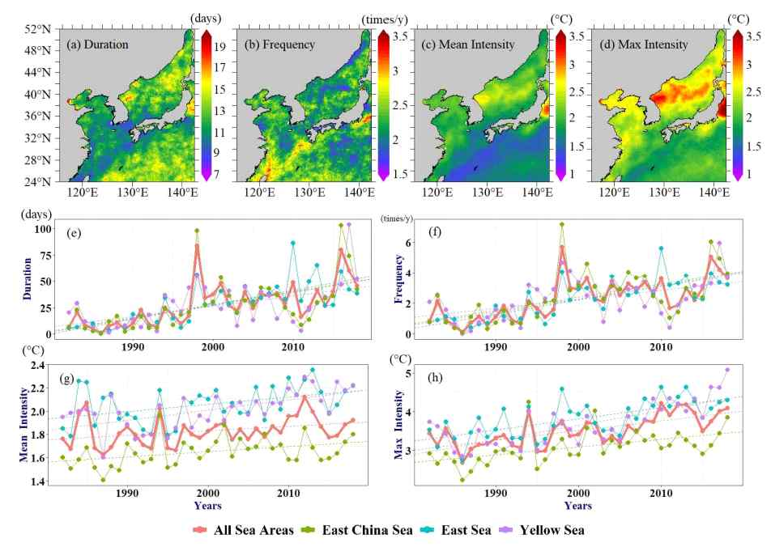
2. 미래 전망 연구 현황
KIOST는 극값분석 기법을 활용하여 40년간(1982~2021년)의 관측 데이터를 바탕으로 미래 해양 열파를 전망하였다. 발생일수의 미래 전망은 20년 회귀주기에서는 공간적 차이가 거의 없지만, 50년과 100년 회귀주기에서는 동한만을 포함한 한반도 동쪽 연안과 동해 중심부에서 400일 이상의 강한 연 해양 열파 발생일이 전망된다. 100년 주기 극단적 해양 열파의 경우 발생일수는 동해 남부 최대 184일, 동중국해 153일, 동해 북부 133일, 황해 114일로 예측되며, 동한만은 해양 열파 위험도가 매우 높은 지역으로 평가된다(장찬주 외, 2023).
김영호 연구팀은 고해상도 일별 해수면 온도 자료를 활용해 CMIP6 기반 두 시나리오를 비교하였다. 현재 온난화 추세가 지속되는 SSP3-7.0 시나리오에서는 21세기 말 전 세계 해양의 약 68%가 극단적 해양 열파에 노출되며, 한국이 속한 태평양 해역은 76%가 노출되어 세계 평균보다 높다. 국내 주변 해역에서는 강도가 1℃ 이상, 지속일수는 300일 이상까지 확대될 것으로 전망되며, 일부 지역은 1년 이상 열파가 지속되는 상황도 배제할 수 없다(정수연 외, 2024).
반면 2050 탄소중립을 성공적으로 실현하는 SSP1-1.9 시나리오에서는 극단적 해양 열파 노출 해역 비율이 0.02~0.07%로 대폭 감소하여 피해를 최대 99%까지 줄일 수 있다. 다만 발생 빈도는 탄소중립 달성 시에도 현재보다 2~4배 증가할 가능성이 있으며, 특히 북서태평양과 한국 연근해에서 증가 폭이 더 클 것으로 예상된다. 이는 2040년경부터 급격히 강해질 것으로 예측되며, 북서태평양의 온난화 정도는 북태평양 아열대 순환계 확장으로 지구 평균보다 높아 우리나라 주변 해역이 외해보다 더 크게 영향을 받을 전망이다.
제4절 해양 열파 적응 가이드라인의 필요성
해양 열파는 단기간에 극심한 영향을 미치는 극한 기후 현상으로, 사전 예방과 신속한 대응이 무엇보다 중요하다. 그러나 현재 우리나라는 체계적인 모니터링·대응 체계가 미흡한 실정이다.
첫째, 실시간 해양 열파 감시 및 조기 경보 시스템 구축이 시급하다. 호주, 미국 등 선진국은 이미 운영 중인 예보 시스템을 통해 수산업계와 관리자에게 사전 정보를 제공하고 있다.
둘째, 해역별·산업별 맞춤형 적응 전략 수립이 필요하다. 양식업, 연안 관광업, 해양생태계 보전 등 분야별로 취약성과 대응 역량이 다르므로 차별화된 전략이 요구된다.
셋째, 생태계 변화를 고려한 장기적 해양 공간 관리 계획이 필요하다. 해양보호구역 재설정, 수산자원 관리 체계 개편, 연안 토지이용 계획 수정 등 통합적 접근이 요구된다.
이에 본 가이드라인은 국내외 해양 열파 연구 동향과 정책 사례를 분석하고, 한반도 해역의 발생 특성과 미래 전망을 고려하여 효과적으로 적응할 수 있는 실무적 방향을 제시하고자 한다.
제1절 해양 열파 관련 연구 동향
해양 열파는 21세기 들어 전 세계적으로 발생 빈도와 강도가 증가하면서 해양 생태계와 연안 지역사회에 심각한 위협이 되고 있다. 2011년 서호주 해양 열파와 2014~2016년 북태평양 “The Blob” 사건은 해양 열파가 수산업, 관광업, 지역 경제에 막대한 피해를 줄 수 있음을 보여주었고, 이를 계기로 국제 사회는 해양 열파를 중요한 기후 리스크로 인식하기 시작했다. 이에 따라 사회경제적 영향 평가, 조기 경보 시스템 개발, 적응 전략 수립, 국제 협력 체계 구축 등 다양한 정책 연구가 활발히 진행되고 있다.
1. 해양 열파의 사회경제적 영향 평가 연구
Caputi et al.(2016)은 2011년 서호주 해양 열파가 서부 암석 랍스터(western rock lobster) 어업에 미친 경제적 영향을 분석하였다. 해양 열파로 랍스터 유생의 착저(settlement)가 급격히 감소하였고, 이는 수년간 지속되는 어획량 감소로 이어져 지역 어업에 수억 달러의 손실을 입혔다.
Cavole et al.(2016)은 2014~2016년 “The Blob”이 캘리포니아·태평양 북서부 해양 생태계 전반에 미친 영향을 분석하였다. 열파 기간 동안 유해 조류(HAB)가 대규모로 발생하여 던저니스 크랩 어업이 폐쇄되었고, 연어 회유 경로 변화로 상업·레크리에이션 어업 모두 피해를 입었으며, 바다사자와 바다새의 대량 폐사가 관찰되어 먹이 사슬 전체의 붕괴로 이어졌다. 이 연구는 단일 부처가 아닌 통합적인 정책 대응이 필요함을 강조하였다.
2. 해양 열파 조기 경보 시스템 개발 연구
Jacox et al.(2022)은 계절 예측 모델을 활용하면 해양 열파 발생을 수개월 전에 예측할 수 있어 어업 관리자와 양식업자들이 사전 대응할 시간을 확보할 수 있다고 제안했다. 특히 ENSO와 연관된 해양 열파는 예측 가능성이 높다.
호주 연방과학산업연구기구(CSIRO)와 호주 기상청(BOM)은 협력하여 실시간 해양 열파 모니터링 및 예측 시스템을 구축했다. 이 시스템은 현재 발생 중인 해양 열파의 강도·범위·지속 기간을 실시간으로 제공하며, 향후 3개월간의 발생 가능성도 예측한다.
3. 적응 전략 및 관리 정책 개발 연구
Frölicher and Laufkötter(2018)는 지구 온난화가 2℃에서 안정화되더라도 해양 열파 빈도는 현재보다 크게 증가할 것으로 예상되므로 완화(mitigation)와 적응(adaptation) 정책이 동시에 필요하다고 강조하였다. 수산·양식업 부문에서는 내열성 품종 개발, 냉각 시스템 도입, 긴급 대응 프로토콜 수립 등이 요구된다.
Smale et al.(2019)은 Category I~II 수준의 해양 열파는 대부분 가역적 영향을 미치며 수주~수개월 내 회복될 수 있지만, Category III~IV 수준은 생태계의 구조적·비가역적 변화를 일으킨다고 밝혔다. 2011년 서호주 해양 열파는 켈프 숲을 파괴해 10년 이상 회복되지 않았고, 2016년 대보초 해양 열파는 북부 지역 산호의 약 30%를 폐사시켰다. 이러한 결과는 해양보호구역 설정, 복원력 있는 생태계 조성 등 생태계 기반 적응 정책이 필요함을 시사한다.
4. 국제 협력 및 거버넌스 연구
IPCC(2019)는 ‘해양 및 빙권 특별보고서(SROCC)’에서 해양 열파를 주요 기후 리스크로 명시하고 국제 사회의 통합적 대응을 촉구하였으며, 파리협정의 온도 목표 달성이 해양 열파 피해 최소화의 핵심 전략임을 강조하였다.
국제해양탐사위원회(SCOR)는 2018년 국제 워킹그룹을 설립하여 해양 열파의 표준 정의, 탐지 방법, 영향 평가 프레임워크를 개발하고 글로벌 해양 열파 데이터베이스(marineheatwaves.org)를 구축·공개하고 있다. 북태평양해양과학기구(PICES)는 2022년 ‘해양 극한 현상과 연안 영향에 관한 워킹그룹(WG49)’을 신설하여 한국·일본·미국·캐나다·러시아 등 북태평양 연안국의 모니터링 체계를 연계하고, 지역 맞춤형 조기 경보 시스템 개발, 자원 관리 전략 공유 등을 추진하고 있다.
제2절 해양 열파 관련 국외 정책 동향
해양 열파로 인한 경제적·사회적 피해가 가시화되면서, 주요 선진국들은 과학적 연구를 넘어 실질적인 정책 대응 체계를 구축하고 있다. 호주는 2011년 서호주 사례 이후 세계 최초로 실시간 모니터링 시스템을 구축했고, 미국과 캐나다는 2014~2016년 “The Blob” 이후 연방 차원의 대응 체계를 마련했다. 캐나다는 원주민 공동체의 전통 지식을 통합한 접근을 시도하고 있으며, 유럽연합은 회원국 간 협력을 통해 지중해 양식업 보호에 나서고 있다.
1. 호주의 해양 열파 대응 정책
호주 CSIRO와 기상청(BOM)은 협력하여 세계 최초로 실시간 해양 열파 모니터링·예측 시스템(marineheatwaves.org)을 구축했다. 이 시스템은 전 세계 해역의 해양 열파를 실시간 추적하고 4단계(Category I~IV)로 분류해 제공하며, 향후 3개월 발생 가능성도 예측해 누구나 무료로 접근할 수 있도록 공개하고 있다. 호주 수산청(AFMA)은 적응적 수산 자원 관리 정책을 도입하여, 2011년 해양 열파 이후 서부 암석 랍스터 어업의 어획 쿼터를 대폭 줄이고 산란 보호 구역을 확대하는 등 관리 규정을 강화하였다(Caputi et al., 2016).
호주 환경부는 대보초 해양공원의 해양 열파 대응 전략을 수립하였다. 2016·2017년 연속 심각한 해양 열파로 산호의 약 50%가 백화 현상을 겪은 후, 2018년 ‘대보초 장기 지속가능성 계획 2050’을 개정하여 수질 개선, 산호 복원 프로그램 확대, 실시간 백화 모니터링 시스템 구축 등을 핵심 과제로 포함시켰다. 최근에는 뉴사우스웨일스주(2023년)와 태즈메이니아주(2025년)가 각각 ‘해양열파 대응 계획’을 수립하였으며, 조기 경보, 위험 평가, 긴급 대응, 관리 대응, 의사소통, 평가 및 향후 대응 계획의 6대 핵심 요소로 구성된 단계별 대응 체계를 갖추고 있다.
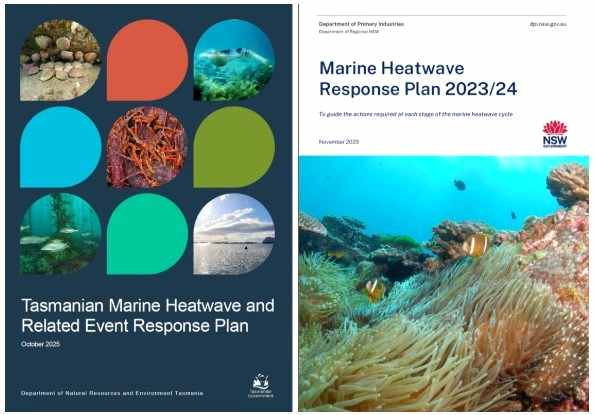
2. 미국의 해양 열파 관리 체계
미국은 2014~2016년 “The Blob”을 경험하면서 연방 차원의 통합적 관리 체계를 구축하기 시작했다. NOAA는 산하 산호초 감시 프로그램(Coral Reef Watch)을 통해 전 세계 산호초 해역의 해양 열파를 실시간 모니터링하며, 산호 백화 위험도를 4단계(Watch, Warning, Alert Level 1, Alert Level 2)로 분류하고 누적 열 스트레스 지표인 Degree Heating Week(DHW)를 개발해 정량적으로 예측한다.
캘리포니아 서부에서는 스크립스 해양연구소가 운영하는 ‘캘리포니아 해양 열파 및 혼란 감시 시스템’이 던저니스 크랩·앵커비 자원·해양 포유류 등 경제·생태적으로 중요한 종에 대한 영향을 평가한다. NOAA 수산청은 ‘기후 준비 수산업(Climate-Ready Fisheries)’ 전략을 통해 어업 관리 계획에 기후변화 영향을 통합하고 있으며, 태평양 어업관리위원회는 해양 열파 발생 시 어획 할당량을 긴급 조정할 수 있는 권한을 갖고 있다.
3. 캐나다의 해양 열파 대응 전략
캐나다 수산해양부(DFO)는 태평양·대서양 연안 모두에서 해양 열파 모니터링과 연구를 주도하고 있다. 브리티시컬럼비아 연안에서는 2013~2016년 “The Blob”의 영향을 집중 연구하여 조기 경보 프로토콜을 개발했으며, 이 프로토콜은 어업 관리자·양식업자·원주민 공동체·지역 정부에 신속히 정보를 전달하는 체계를 포함한다.
캐나다는 원주민 공동체의 전통적 생태 지식(TEK)을 해양 열파 대응에 통합하는 독특한 접근을 취하고 있다. DFO는 원주민 공동체와 협력하여 전통 지식과 과학적 모니터링을 결합한 통합 관리 체계를 구축하고, 해양 열파 발생 시 식량 안보와 문화 유산을 보호하기 위한 특별 조치를 시행하고 있다.
4. 유럽연합의 해양 열파 정책
EU는 해양 전략 프레임워크 지침(MSFD)을 통해 회원국의 해양 환경 관리를 조율하며, 최근 해양 열파를 주요 위협으로 인식해 대응 정책을 강화하고 있다. 코페르니쿠스 해양환경 모니터링 서비스(CMEMS)는 위성 관측과 해양 모델을 결합해 지중해·북해·대서양 등 유럽 주변 해역의 해수면 온도를 실시간 제공하며, 해양 열파 발생 시 회원국 정부와 연구기관에 경보를 발령한다.
지중해 지역은 전 세계에서 해양 열파 증가 추세가 가장 뚜렷한 지역 중 하나로, 스페인·프랑스·이탈리아·그리스 등 연안국의 양식업 피해가 특히 심각하다. EU는 양식업 기후 적응 프로그램을 통해 내열성 품종 개발, 냉각 기술 지원, 해양 열파 보험 제도 도입 등을 추진하고 있으며, 2013년 개정된 EU 공동어업정책(CFP)은 기후변화 적응을 핵심 원칙으로 포함하여 회원국이 어업 규정을 신속히 조정할 수 있도록 하였다.
제1절 해양 열파 관련 법·제도, 계획 현황
우리나라의 해양 열파 관리 정책은 아직 초기 단계로, 독립적인 관리 법률은 존재하지 않으며 기후변화 적응·해양생태계 보전·수산자원 관리 등 관련 법률과 계획에 분산되어 있다. 해양수산부의 대응은 주로 「해양생태계의 보전 및 관리에 관한 법률」에 근거한 모니터링과 「수산자원관리법」에 근거한 자원 보호, 「탄소중립·녹색성장 기본법」에 근거한 기후변화 적응 대책이 중심이다.
1. 법·제도
「기후위기 대응을 위한 탄소중립·녹색성장 기본법」(2021년 제정)은 기후위기 적응대책의 수립·시행, 영향평가, 취약계층 보호 등을 규정하며 해양 열파를 극한 기후 현상으로 분류해 적응대책 범위에 포함한다. 「해양생태계의 보전 및 관리에 관한 법률」(2006년 제정)은 해양생태계 기본조사, 해양보호구역 지정·관리 등을 규정하여 해양 열파로 인한 생태계 영향을 모니터링하는 근거가 된다. 「수산자원관리법」(2009년 제정)은 수산자원 보호·회복·조성을 규정하며, 「자연재해대책법」(1995년 제정)은 최근 양식 어업 피해 증가에 따라 해양 열파를 자연재해 범주에 포함하는 방안이 논의되고 있다. 「재난 및 안전관리 기본법」은 대규모 피해 발생 시 재난 선포·지원 체계의 근거가 된다.
2. 계획
「제3차 국가 기후변화 적응대책(2021~2025)」은 고수온 현상에 따른 양식 생물 폐사 피해 저감을 위한 조기 경보 체계 구축과 내고온성 품종 개발을 정책 과제로 포함하였다. 「제2차 해양생태계 보전·관리 기본계획(2019~2028)」은 해양환경 장기 모니터링 강화, 기후변화 영향 평가 등을 제시하였고, 「제5차 국가환경종합계획(2020~2040)」과 「제4차 지속가능발전 기본계획(2021~2040)」도 해양생태계 건강성 제고와 감시 체계 구축을 포함한다. 「제1·2차 수산자원관리 기본계획」은 기후변화 대응 자원 관리 기술 개발과 어업인 지원 체계 강화를 정책 과제로 제시하였다.
| 관련 법 | 관련 계획 |
|---|---|
| 기후위기대응법(탄소중립기본법) | 제3차 국가기후변화적응대책(2021~2025) |
| 해양생태계법 | 제2차 해양생태계보전·관리기본계획(2019~2028) |
| 수산자원관리법 | 제2차 수산자원관리기본계획(2021~2025) |
| 자연재해대책법 | 제5차 국가환경종합계획(2020~2040) |
| 재난및안전관리기본법 | 제4차 지속가능발전기본계획(2021~2040) |
제2절 해양 열파 관련 주요 정책 추진 현황
1. 정책 추진 현황
우리나라의 해양열파 대응 정책은 예측·모니터링 체계, 재해 지원, 연구개발, 조직 운영의 네 축으로 추진되고 있다. 예측·모니터링 측면에서 기상청은 2024년 12월 고해상도(약 8km) 해양 기후변화 시나리오를 기반으로 2100년까지의 한반도 주변 해수면온도·표층염분·해수면높이 장기 전망을 발표하였다. 국립수산과학원은 전국 연안에 실시간 수온관측시스템 200개소를 운영하며 '실시간해양수산환경 관측시스템'을 통해 모바일 웹·단문자 서비스로 어업인에게 정보를 제공하고, 2017년부터 이상수온 특보 기준을 운영하며 2025년 7월부터는 관측소별 7일 수온 예측 서비스를 시행하고 있다.
재해 지원 측면에서는 「농어업재해대책법」 제4조에 따라 고수온으로 인한 양식 어업 피해를 수산재해로 인정해 지원하고 있다. 2011~2025년 수산분야 자연재해 피해금액은 총 5,027억 원이며 이 중 72%인 3,608억 원이 고수온으로 인해 발생하였다. 특히 2024년에는 7월 24일부터 10월 2일까지 고수온특보가 발령되어 특보 도입 이후 최대 규모인 1,430억 원의 피해가 발생하였으며, 정부는 재난지원금·저리 융자·상환기한 연기 등을 지원하고 있다.
연구개발 측면에서는 국립수산과학원이 '수산재해통합관리 시스템' 구축을 추진하고 있으며, 2004년부터 고수온 내성 품종 개발 연구를 수행해 김 9품종, 미역 7품종, 다시마 1품종을 개발하였고 이 중 김 9품종·미역 5품종은 품종보호권을 등록하였다. 조직 운영 측면에서는 현재 수산재해 대응 업무를 국립수산과학원 기후환경연구부 소속 임시조직인 '수산재해대응팀'에서 수행하고 있으나, 「재난안전기본법」 등에 법정사무로 지정되어 있지 않아 법적 근거가 미비한 상황이며, 2025년 11월 국회 정책토론회에서는 이를 '수산재해대응과' 또는 '수산재해대응센터'로 법제화해야 한다는 의견이 제시되었다.
2. 시사점
① 법적·제도적 기반 강화 — 이상수온 예찰·예보 업무의 법적 근거를 「농어업재해대책법」 개정을 통해 마련하고, 수산재해대응 전담조직을 법제화해야 한다.
② 통합 대응 체계 구축 — 해양수산부 내 분산된 재해 대응 업무를 전담 부서로 통합하고, 기상청-국립수산과학원-지자체 간 정보 공유·협력 거버넌스를 제도화해야 한다.
③ 사전 예방 중심 전환 — 재난지원금 등 사후 지원 중심에서 벗어나 양식장 구조 개선, 내열성 시설 도입, 내성 품종 보급 확대 등 사전 예방 투자를 확대해야 한다.
④ 예측·조기 경보 고도화 — 7일 수온 예측을 넘어 계절 규모 예측 시스템을 구축하고, 해역별·품목별 맞춤형 경보 체계를 개발해야 한다.
⑤ 연구개발 성과의 현장 보급 강화 — 개발된 고수온 내성 품종의 실증 연구와 기술 이전 체계를 강화하고 현장 보급을 확대해야 한다.
⑥ 중장기 적응 전략 수립 — 해역별·품목별 기후변화 영향 평가를 바탕으로 2050·2100년을 목표로 한 중장기 적응 로드맵과 주산지 이동 대비 전략을 마련해야 한다.
제1절 한반도 상세모델 기반 해양 열파 예측
해양열파(MHW)는 특정 해역의 수온이 평년보다 현저히 높은 상태가 일정 기간 이상 지속되는 현상을 의미한다. 해수면 온도(SST)는 대기와 경계를 이루는 수심 1m 이내의 수온으로, 해양-대기 사이의 에너지·운동량·수증기 교환에 중요한 역할을 하며, 상승 시 해수면 상승과 용존산소 감소 등 해양생물 생존에 직접적인 영향을 미친다.
1. 해양 열파 예측 방법론
서울대학교 해양환경예측연구실은 CMIP6(CNRM-ESM2-1, EC-Earth3-Veg, IPSL-CM6A-LR, UKESM1-0-LL 앙상블 평균)를 기반으로 한반도 주변 상세 해역 수온 자료를 생산하였다. 지역기후 해양모델로는 ROMS를 사용하였으며, 모델 영역은 동경 98~284도, 남위 20도~북위 65도로 설정하여 수평 격자 해상도 1/8°(약 13km), 수직 50개 층으로 구성하였다. 해저 지형은 ETOPO1을, 경계조건은 CMIP6 GCM 결과를 활용했다.
모의 기간은 과거재현(1983~2014년)과 미래전망(2015~2100년)으로 구분되며, 기후값 산정을 위해 Historical 시나리오(1991~2014년)와 SSP2-4.5 시나리오(2015~2020년)를 결합하였다. 해양열파 탐지는 Hobday et al.(2016)의 정의를 따라 30년간 일별 해면수온의 90백분위수와 평균값의 차이(ΔT)를 임곗값으로 삼아, 일별 수온이 이를 넘어 5일 이상 지속되는 경우로 정의하였으며 강도는 보통(ΔT~2ΔT), 강함(2~3ΔT), 심함(3~4ΔT), 극심함(4ΔT 이상)으로 분류하였다.
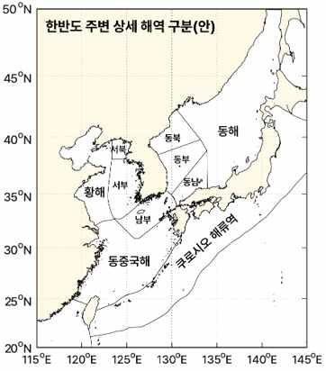
2. 한반도 주변 해양 열파 현황 및 전망
과거 관측 자료 분석(1991~2024). OISST 관측자료 분석 결과, 동아시아·동해·황해·동중국해 해역에서 해양열파 발생 빈도가 증가하는 추세를 보였다. 2020년 이후 특히 발생이 급증하였으며, 2024년에는 동중국해와 남해안에서 보통(moderate) 수준의 해양열파가 광범위하게 발생하였다.
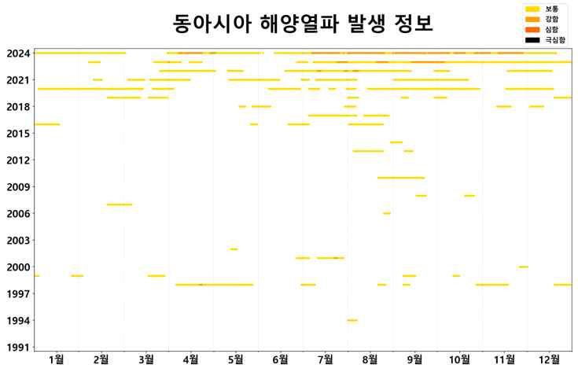
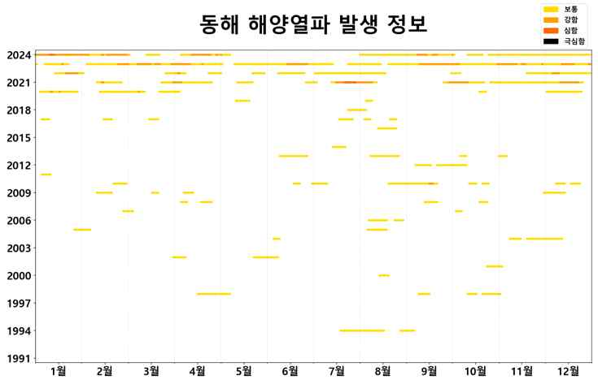
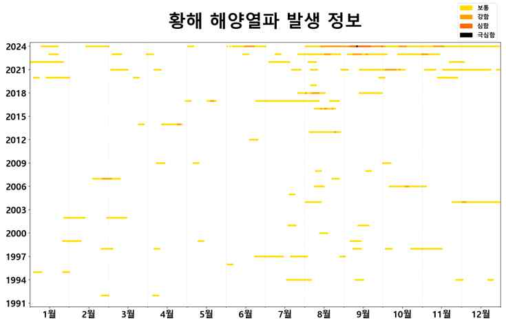
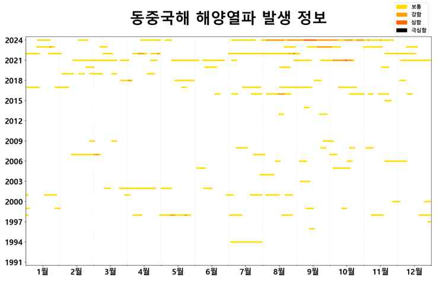
미래 해양 열파 발생 전망. 1/8° 모델(ensemble-ssp370) 시나리오에 따른 미래전망(2025~2100) 결과, 해양열파 발생 일수는 단기에서 장기로 갈수록 급격히 증가할 것으로 예측된다. SSP1-2.6 기준 2030년대에는 동아시아 해역에서 연간 50일 미만이 예상되나, 2090년대 이후에는 연간 300일 이상으로 급증한다. 동해도 2030년대 50일 미만에서 2090년대 이후 350일 이상으로 증가하며, 동중국해는 2030년대부터 이미 높은 빈도를 보이다가 2090년대 이후 연중 해양열파 상태가 지속될 것으로 예측된다.
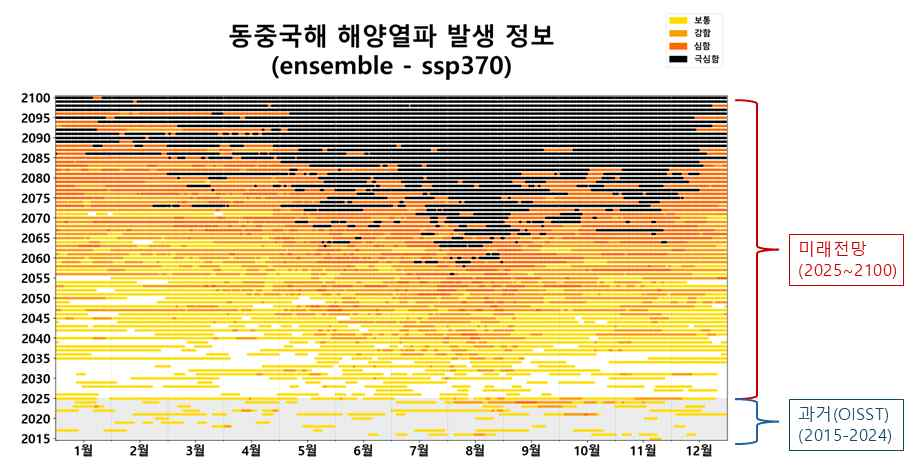
월별 해역별 패턴을 보면 2030년대에는 주로 7~9월에 집중 발생하나 2050년대 이후 5~10월로 확대되며 2100년대에는 거의 연중 발생한다. 동해는 2030년대 8~9월에서 2100년대 4~11월까지 장기화되고, 동중국해는 2030년대부터 이미 5~11월의 장기간 발생 패턴을 보이다 2100년대에는 연중 발생하는 것으로 전망된다.
2024년 관측 자료에서는 동아시아해역 전반에서 연간 10~30일의 해양열파가 발생하였으며, 동중국해 북부와 동해 남부에서 높은 빈도를 보였다. Ensemble-ssp370 2030년 1월 예측에서도 유사한 공간 분포가 나타났으며, 최대 발생 강도는 2024년 관측에서 대부분 보통 수준이었으나 일부 동해 중부 해역에서 심함(severe) 수준이 관찰되었다. 2030년 1월 예측에서는 황해 일부 해역에서 강함(strong), 동중국해와 동해 전역에서 보통~강함 수준의 해양열파가 예측된다.
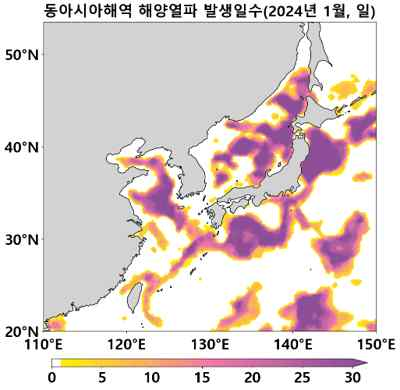
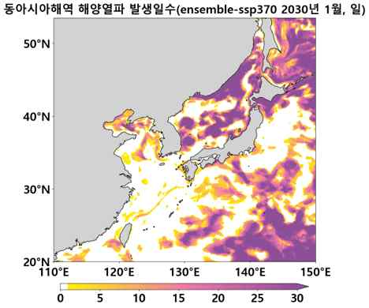
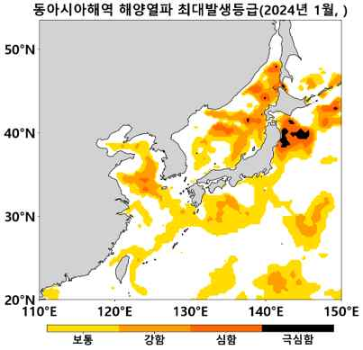
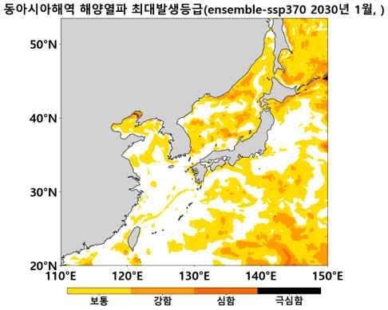
제2절 해양 열파 취약 종 현황 및 영향
1. 해조류 현황
우리나라 해조류 생산량은 2024년 약 172만 톤, 생산액은 1조 8,279억 원으로 전체 해면양식 생산량(225만 톤) 대비 76.4%, 생산액(3조 7,014억 원) 대비 49.4%를 차지하여 절대적인 비중을 차지한다. 김은 2024년 생산액 1조 2,037억 원으로 해조류 생산금액의 65.9%를 차지하며 전년 대비 90.3% 증가한 수출 효자 품목이다. 미역과 다시마는 전복 양식의 필수 먹이원으로, 이들의 생산 감소는 전복 양식 산업에도 연쇄적으로 영향을 미칠 수 있다. 생태적으로도 미역·다시마와 같은 대형 갈조류는 '해중림(海中林)'을 형성해 다양한 해양생물의 서식처와 산란장을 제공한다.
해조류는 수온 변화에 매우 민감하다. 최적 수온까지는 대사율이 증가하지만, 이를 벗어나면 대사율이 감소하고 최적 수온보다 높은 수온에서는 총광합성보다 호흡이 더 크게 증가해(Andersen et al., 2013) 엽체가 괴사하는 생리학적 반응이 나타난다(Hwang et al., 2018). 실제로 제주도 해역에서는 최근 10~20년 전부터 평균 해면 수온이 상승하면서 아열대종인 큰갈파래가 확산되었고, 34년 만에 미역과 감태 등의 해조류가 절멸하는 현상이 관찰되었다.
2. 해조류 취약성 평가 개념
연도별 해역별 해양열파 발생 일수 분석 결과, 2030년대 연간 50일 미만이었던 해양열파가 2090년대 이후 300일 이상으로 급증할 것으로 전망되며 일부 해역은 연중 지속될 것으로 예측된다. 수온변화에 따른 양식 순기 변화를 살펴보면 김의 적정 채묘 수온(22℃ 이하) 시기는 9월 초에서 9월 말 이후로, 미역의 적정 가이식 수온(20℃ 이하) 시기는 9월 중순에서 10월 초순 이후로, 다시마의 적정 가이식 수온(18℃) 시기는 10월 초순에서 11월 초순 이후로 늦어지고 있다.
최근 5년간(2020~2024) 생산량 추이를 보면 해양열파에 가장 취약한 다시마의 생산량은 675,074톤(2020년)에서 544,352톤(2024년)으로 감소한 반면, 비교적 내성이 강한 김의 생산성은 소폭 상승하는 경향을 보여 종별 수온 민감도 차이가 생산량에 반영되고 있음을 확인할 수 있다. 생산지역별 피해 확률을 보면 다시마(적정 14℃, 한계 18℃)가 가장 크고, 김(15℃/20℃)이 그 다음이며, 미역(18℃/20℃)은 상대적으로 나은 편이다. 다만 김은 생산금액이 다시마보다 6배 이상 높아 경제적 피해액 규모는 해조류 중 가장 크게 추정된다.
3. 김
1) 생산 현황 및 서식 조건
김류는 2024년 기준 생산량 551,510톤, 생산금액 1조 2,037억 원으로 해조류 생산금액의 65.9%를 차지하는 최대 품종이다. 2024년 기준 지역별 생산량은 전라남도(79.4%), 전라북도(6.4%), 충청북도(5.5%), 경기도(4.6%) 순이다. 김 양식은 겨울철 수온 3℃ 이상으로서 5~10℃ 기간이 3개월 이상 유지되는 곳이 좋은 양식 해역이며, 채묘기에는 22℃ 이하, 발아기 15~22℃, 엽체 성육기 5~15℃가 적합하다.
김은 홍조류로서 상대적으로 고온 내성이 강하여 일부 품종은 25℃에서도 생장이 가능하다. 다만 20℃에서 장기 노출 시 생장이 억제되며 23~24℃ 이상에서는 순광합성이 급락하고 조직이 괴사한다(Yin et al., 2022). 국립수산과학원은 저준위 감마선을 이용한 돌연변이 육종을 통해 20℃에서 생장이 빠른 고온 내성 품종을 개발하였다.
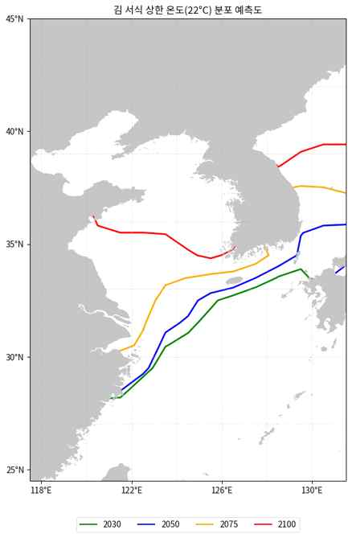
부경대 해양역학예측실험실(2025) 예측에 따르면, 김의 22℃ 서식 상한선은 2030년 제주도 남부부터 서·남해안, 동해 남부(북위 약 36도)까지, 2050년 동해안 북위 약 37도까지, 2075년 북위 약 38도까지, 2100년 동해 최북단(북위 약 39도)까지 완만하게 북상한다. 제주도 일부 해역을 제외하고는 2100년까지도 대부분의 김 양식장에서 양식이 가능할 것으로 전망되어, 김은 미역에 비해 고온 내성이 강해 현재 주요 양식장(전남·전북·충남)에서 지속적인 양식이 가능할 것임을 시사한다. 다만 제주 주변과 남해 일부 해역에서는 여름철 고수온으로 양식 시기 조절이 필요할 것으로 판단된다.
4. 미역
1) 생산 현황 및 서식 조건
미역(Undaria pinnatifida)은 2000년대 이후 남해안 전복 산업 확대에 따른 중요한 먹이원으로 이용되고 있다. 2024년 기준 생산량은 572,951톤, 생산금액은 1,016억 원이며 전라남도가 96.5%를 차지한다. 배우체의 발아·생장은 17~20℃가 가장 좋고 23℃ 이상에서는 휴면하며, 아포체는 17℃ 이하에서 잘 자란다.
미역은 냉수성 갈조류로서 10~18℃에서 생장이 양호하며 22℃ 이상에서 생장이 저해되고 포자 발아율도 감소한다. 생장 저해 수온 임계점은 22℃로, 이 온도에서 7일 이상 노출되면 광합성능이 감소하고 엽체 소실로 이어진다. 가이식 초기(9~12월)에 갑작스러운 수온 상승이 발생하면 아포체나 어린 유엽이 녹아 없어지는 '싹녹음' 현상이 나타난다.
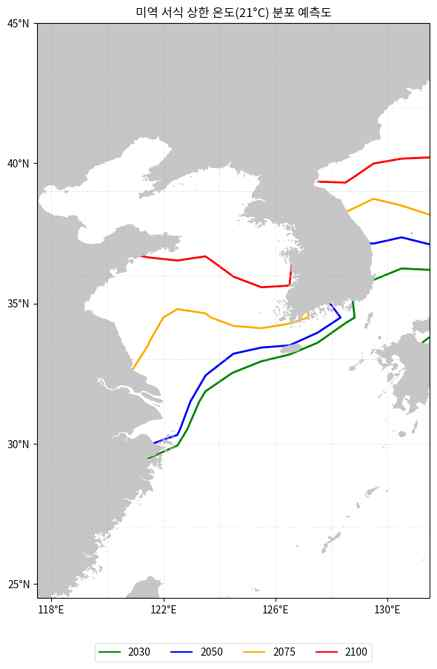
미역의 21℃ 서식 상한선은 2030년 제주 남부~남해안~동해 남부(북위 약 35도)에서 2050년 북위 약 36도, 2075년 북위 약 37도, 2100년 동해 북부(북위 약 40도)까지 북상하며, 남해와 제주도 해역은 2100년경 서식이 거의 불가능해질 것으로 전망된다. 이는 미역 생산량의 96.5%를 차지하는 전라남도 주산지가 2050년 이후 서식 적합도가 급격히 감소하여 기존 양식장 대부분이 영향을 받을 것임을 시사한다.
5. 영향 및 관리방안
| 시기 | 미역 | 김 |
|---|---|---|
| 2030~2050년 | 남해안 일부 해역 여름철 고수온 피해 시작, 가이식·양성 시기 조정 필요 | 채묘 시기 다소 지연, 전반적 양식 체계는 유지 |
| 2050~2075년 | 서식 상한선 동해안 중부까지 북상, 남해·제주 서식 적합 해역 급격 축소, 북상 또는 내성 품종 개발 필수 | 대부분 양식장 생산 가능하나 제주·남해 일부 고수온 기간 연장, 시기 조절 필요 |
| 2075~2100년 | 남해·제주 전통 양식 거의 불가능, 동해안 북부로 이동 불가피 | 전남·전북·충남에서 지속 생산 가능 전망이나 내성 품종·육상양식 기술 병행 필요 |
해양열파 발생 빈도와 강도가 증가함에 따라 해조류 양식업은 전례 없는 도전에 직면하고 있다. 미역은 2050년 이후 전남 주산지에서 급격한 서식 범위 축소가 예상되며, 김은 상대적으로 양호한 전망을 보이나 채묘 시기 조정 등 양식 일정의 변화가 불가피하다. 단순히 현재의 양식 방식을 유지하는 것만으로는 지속가능성을 담보할 수 없어, 과학적 예측에 기반한 선제적 적응 전략 수립과 단계적 실행이 시급하다.
1. 고수온 내성 품종 개발 및 보급
해양수산부는 '양식수산물 전략품종 육성사업'을 통해 김 신품종 개발에 주력해 왔으며, 2013년부터는 민간주도형 Golden Seed Project를 중심으로 수입대체용 기능성 김 종자 개발 연구를 추진하고 있다. 국립수산과학원은 선발육종법에 DNA 마커를 적용한 교잡육종법과 감마선을 이용한 돌연변이육종법을 확립하여 연구를 지속하고 있으며, 2012년 해조류 분야 UPOV 협약 발효 이후 국내 신품종을 개발하지 못하면 로열티 지급으로 생산비 상승과 경쟁력 약화가 우려되는 상황이다.
2004년부터 유전적 순계 개발, 교잡육종을 통해 현재까지 김 9품종, 미역 7품종, 다시마 1품종을 개발하여 품종보호권을 출원하였고, 이 중 김 9품종과 미역 5품종은 등록을 완료하였다. 서식 상한선 분석에 따르면 미역은 2050년 이후 주산지 서식 적합도가 급격히 감소할 것으로 전망되어, 전라남도 해역에서 지속 생산을 위해 22℃ 이상에서도 생장 가능한 품종 개발이 시급하다.
2. 양식장 입지 조정 및 북상 대응
서식 상한선 분석은 장기적으로 양식장의 지리적 이동이 불가피함을 시사한다. 특히 미역은 2075년 이후 남해·제주 해역에서 서식이 어려워질 것으로 전망되어 동해안 중·북부로의 이동을 준비할 필요가 있다.
첫째, 동해안 지역의 미역 양식 적합 해역에 대한 정밀 조사를 실시하고 양식장 개발 가능 지역을 사전에 확보해야 한다.
둘째, 남해안 양식 어업인의 동해안 이주를 지원하는 프로그램을 마련하고 양식 시설 이전 비용을 지원해야 한다.
셋째, 동해안 지역의 기반 시설(저온 저장고, 가공·출하 시설 등)을 확충하여 양식 산업의 원활한 이전을 뒷받침해야 한다.
3. 실시간 수온 모니터링 및 예보 체계 강화
국립수산과학원은 지자체·유관기관과 협동으로 국내 연안에 실시간 수온관측시스템 200개소를 설치하여 모바일 웹·단문자 서비스로 어업인에게 정보를 제공하고 있으며, 2017년부터 이상수온 특보 기준을 운영하고 2025년 7월부터 관측소별 7일 수온 예측 결과를 서비스하고 있다. 서식 상한선 변화 전망을 고려할 때, 양식장별 맞춤형 수온 예보 시스템 구축이 필요하다. 특히 미역 양식장의 경우 21℃ 임계 수온 도달 시기와 지속 기간을 사전에 예측하여 가이식·수확 시기를 조정할 수 있도록 지원해야 한다.
4. 정책적 지원 강화
김의 경우 수출 경쟁력 제고를 위해 김산업 진흥구역 3곳(신안·해남·서천)을 지정하는 등 '제1차 김산업 진흥 기본계획(2023~2027)'을 수립하여 수출 금액 10억 달러 달성을 목표로 하고 있다. 관계부처 합동의 '제3차 국가 기후위기 적응 강화대책(2023~2025)'과 해양수산부의 '양식분야 기후변화 대응 계획'(2023)은 고수온 내성 품종 개발, 고수온에 강한 교잡바리류 신품종 개발, 맞춤형 사료 개발 등을 추진하고 있으며, '해양수산분야 2050 탄소중립 로드맵'(2021)은 블루카본을 통해 136만 톤 흡수를 목표로 설정하였다. 서식 상한선 분석 결과를 반영해 미역 양식 산업에 대한 대체 품종 개발, 양식장 북상, 육상양식 기술 개발 등을 포괄하는 중장기 종합 대책 수립이 필요하다.
5. 향후 대응 계획 및 발전 방향
국립수산과학원은 지역 특화 신품종 개발·보급과 육상채묘·냉장망 기술 안정화 연구를 통해 기술 보급을 확대하고 있다. 미역·다시마 등은 전남 생산 비중이 90% 이상이지만 대부분 전복 먹이로 사용되어 김 대비 수익 창출이 낮으므로, 기능성 식품·신약 원료 활용을 위한 연구·투자가 필요하다. 고수온 및 외해양식에 적합한 신품종(고온내성·내병성·기능성) 개발·보급을 위한 지속적인 연구개발 투자와 수출용 우량종자 개발이 요구된다.
서식 상한선 분석 결과는 해조류 양식 산업의 장기적 지속가능성을 위해 품종 개발, 양식장 이전, 기술 혁신 등 다각적 접근이 필요함을 보여준다. 특히 미역은 2050년 이후 급격한 환경 변화가 예상되므로 조기에 대응 체계를 구축하여 양식 산업의 안정적 유지를 도모해야 할 것이다.
참고문헌
국립수산과학원. (2024). 2024 수산 분야 기후변화 영향 보고서.
김형철. (2025). 해조류 해양열파 영향분석. 전문가 자문. 한국해양수산개발원.
부경대 해양역학예측실험실. (2023). CMIP6 기반 아열대종 서식 하한선 예측.
장찬주 외. (2023). 한국해 해양열파 특성 및 변동성. 과학기술정보통신부.
정수연, 최소현, 김영호. (2021). CMIP6 모형 결과 분석을 통한 북서태평양 해면수온과 해류의 미래변화. 바다, 26(4), 291-306.
Di Lorenzo, E., & Mantua, N. (2016). Multi-year persistence of the 2014/15 North Pacific marine heatwave. Nature Climate Change, 6(11), 1042-1047.
Hobday, A. J. et al. (2016). A hierarchical approach to defining marine heatwaves. Progress in Oceanography, 141, 227-238.
Hobday, A. J. et al. (2018). Categorizing and naming marine heatwaves. Oceanography, 31(2), 162-173.
Holbrook, N. J. et al. (2019). A global assessment of marine heatwaves and their drivers. Nature Communications, 10, 2624.
IPCC. (2021). Climate Change 2021: The Physical Science Basis. Cambridge University Press.
Miyama, T., Minobe, S., & Goto, H. (2021). Marine heatwave of sea surface temperature of the Oyashio region. Frontiers in Marine Science, 7, 576240.
Oliver, E. C. J. et al. (2018). Longer and more frequent marine heatwaves over the past century. Nature Communications, 9(1), 1324.
Oliver, E. C. J. et al. (2021). Marine heatwaves. Annual Review of Marine Science, 13, 313-342.
Oh, S.-G., Son, S.-W., Jeong, S., & Cho, Y.-K. (2024). Significant reduction of potential exposure to extreme marine heatwaves by achieving carbon neutrality. Earth's Future, 12(6).
Rodrigues, R. R. et al. (2019). Common cause for severe droughts in South America and marine heatwaves in the South Atlantic. Nature Geoscience, 12(7), 620-626.
Smale, D. A. et al. (2019). Marine heatwaves threaten global biodiversity and the provision of ecosystem services. Nature Climate Change, 9(4), 306-312.
Wernberg, T. et al. (2016). Climate-driven regime shift of a temperate marine ecosystem. Science, 353(6295), 169-172.
Caputi, N. et al. (2016). Management adaptation of invertebrate fisheries to an extreme marine heat wave event. Ecology and Evolution, 6(11), 3583-3593.
Cavole, L. M. et al. (2016). Biological impacts of the 2013–2015 warm-water anomaly in the northeast Pacific. Oceanography, 29(2), 273-285.
Frölicher, T. L., & Laufkötter, C. (2018). Emerging risks from marine heat waves. Nature Communications, 9(1), 650.
IPCC. (2019). Special Report on the Ocean and Cryosphere in a Changing Climate.
Jacox, M. G. et al. (2022). Global seasonal forecasts of marine heatwaves. Nature, 604(7906), 486-490.
해양수산부 보도자료 (2024.11.20.; 2024.10.2.). 고수온 위기경보 및 재난지원금 관련 보도자료.
한국해양과학기술원. (2023). 봄철 동해 해면수온 최근 40년내 최고치 기록. 보도자료.
해양열파웹사이트, marineheatwaves.org (검색일: 2025.10.02.).